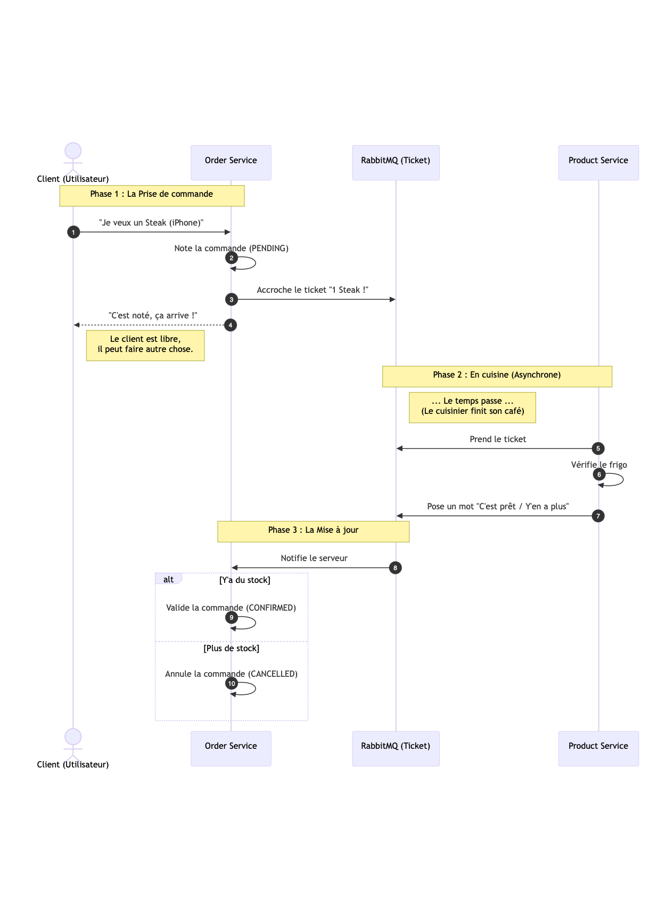
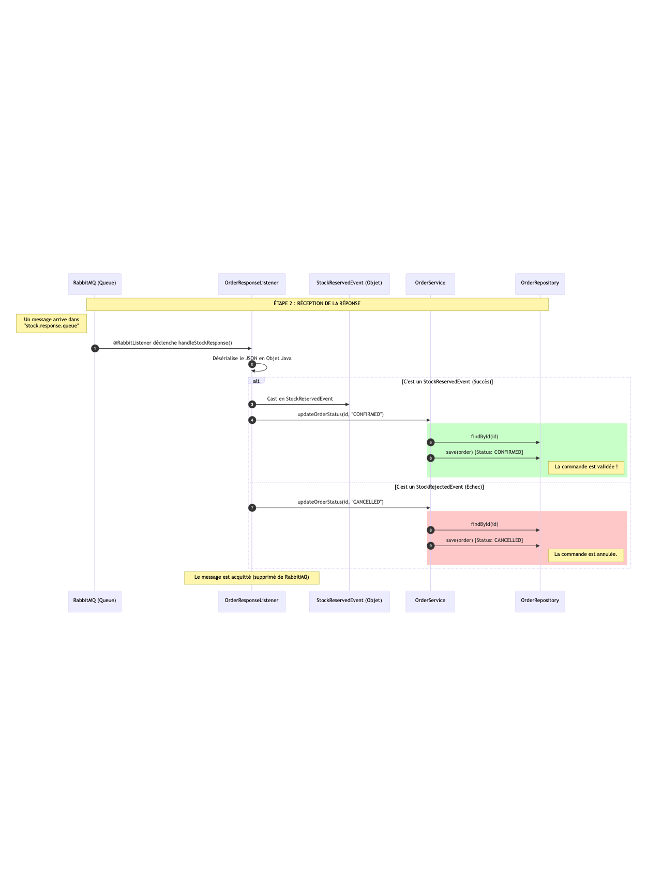
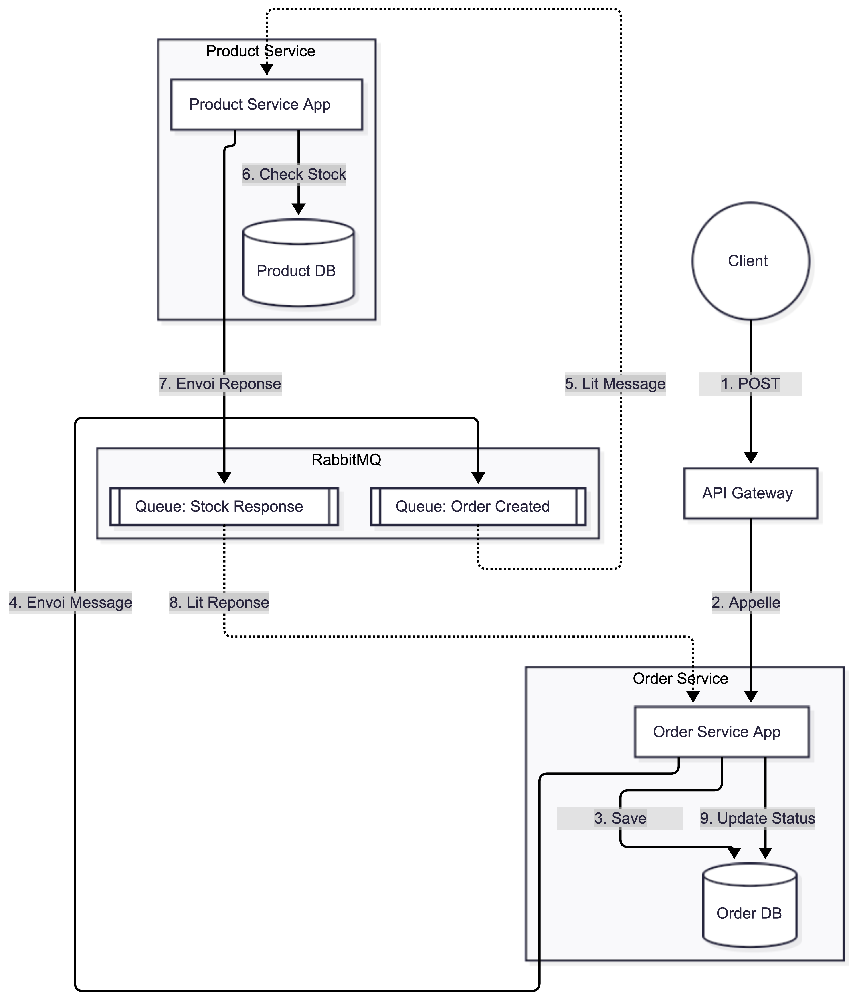

## 1. QU'EST-CE QUE RABBITMQ ?
RabbitMQ est un message broker (courtier de messages) qui permet à des services de communiquer de manière asynchrone. Au lieu d'appeler directement un autre service et d'attendre sa réponse, un service publie un message dans RabbitMQ, qui le distribue aux services intéressés.
### L'Analogie du Restaurant 🍽️
Phase 1 : La Prise de commande
- Client commande: "Je veux un Steak"
- Serveur note la commande (status: PENDING)
- Serveur accroche le ticket au "passe-plat" (RabbitMQ)
- Client est libre de faire autre chose
Phase 2 : En cuisine (Asynchrone)
- Le cuisinier prend le ticket du passe-plat
- Il vérifie le frigo (stock)
- Il pose un mot "C'est prêt!" ou "Y'en a plus"
Phase 3 : La Mise à jour
- Le serveur lit la réponse du cuisinier
- Si stock OK → Commande CONFIRMED
- Si plus de stock → Commande CANCELLED
### Les Acteurs Principaux
| Acteur | Dans le Restaurant | Dans votre Code |
|---|---|---|
| Producer (Producteur) | Le serveur qui accroche les tickets | Order Service qui publie OrderCreatedEvent |
| Queue (File d'attente) | Le passe-plat où s'accumulent les tickets | order.created.queue |
| Consumer (Consommateur) | Le cuisinier qui prend les tickets | Product Service qui écoute les commandes |
| Exchange | Le système de dispatch (quel ticket va où) | order.exchange |
## 2. ÉTAPE 1 : PARLER (PUBLIER UN MESSAGE) 📤

Order Service crée une commande et publie un événement OrderCreatedEvent dans RabbitMQ pour informer Product Service.
### Flux Détaillé
- Client envoie POST /orders (JSON)
- OrderController appelle createOrder()
- OrderService sauvegarde la commande (status: PENDING)
- OrderService crée un OrderCreatedEvent
- OrderEventPublisher envoie l'événement via RabbitTemplate
- RabbitMQ reçoit le message dans order.exchange
- Client reçoit HTTP 200 OK (ne bloque pas!)
### 1.1 Créer l'Événement (DTO)
Fichier: OrderCreatedEvent.java (order-service)
package com.example.order_service.messaging.events;
public class OrderCreatedEvent {
private Long orderId;
private Long productId;
private Integer quantity;
private Long customerId;
// Constructeur vide (requis pour JSON)
public OrderCreatedEvent() {}
// Constructeur avec paramètres
public OrderCreatedEvent(Long orderId, Long productId,
Integer quantity, Long customerId) {
this.orderId = orderId;
this.productId = productId;
this.quantity = quantity;
this.customerId = customerId;
}
// Getters et Setters
public Long getOrderId() { return orderId; }
public void setOrderId(Long orderId) { this.orderId = orderId; }
public Long getProductId() { return productId; }
public void setProductId(Long productId) { this.productId = productId; }
public Integer getQuantity() { return quantity; }
public void setQuantity(Integer quantity) { this.quantity = quantity; }
public Long getCustomerId() { return customerId; }
public void setCustomerId(Long customerId) { this.customerId = customerId; }
}### 1.2 Configurer RabbitMQ
Fichier: RabbitMQConfig.java (order-service)
@Configuration
public class RabbitMQConfig {
// Constantes
public static final String ORDER_EXCHANGE = "order.exchange";
public static final String ORDER_ROUTING_KEY = "order.created";
public static final String ORDER_QUEUE = "order.created.queue";
// ⭐ Convertir les objets Java en JSON
@Bean
public MessageConverter jsonMessageConverter() {
return new JacksonJsonMessageConverter();
}
// ⭐ Template pour envoyer des messages
@Bean
public RabbitTemplate rabbitTemplate(ConnectionFactory factory) {
RabbitTemplate template = new RabbitTemplate(factory);
template.setMessageConverter(jsonMessageConverter());
return template;
}
// Créer l'Exchange (routeur de messages)
@Bean
public TopicExchange orderExchange() {
return new TopicExchange(ORDER_EXCHANGE);
}
// Créer la Queue (file d'attente)
@Bean
public Queue orderQueue() {
return new Queue(ORDER_QUEUE, true); // durable = true
}
// Lier la Queue à l'Exchange
@Bean
public Binding orderBinding(Queue orderQueue, TopicExchange orderExchange) {
return BindingBuilder.bind(orderQueue)
.to(orderExchange)
.with(ORDER_ROUTING_KEY);
}
}### 1.3 Publier l'Événement
Fichier: OrderEventPublisher.java (order-service)
@Service
public class OrderEventPublisher {
@Autowired
private RabbitTemplate rabbitTemplate;
public void publishOrderCreated(OrderCreatedEvent event) {
System.out.println("📤 Publishing: " + event);
// ⭐ Envoyer le message à RabbitMQ
rabbitTemplate.convertAndSend(
RabbitMQConfig.ORDER_EXCHANGE, // Vers quel exchange
RabbitMQConfig.ORDER_ROUTING_KEY, // Avec quelle clé
event // Le message
);
System.out.println("✅ Message published!");
}
}- JacksonJsonMessageConverter convertit OrderCreatedEvent en JSON
- RabbitTemplate envoie le JSON à l'exchange "order.exchange"
- L'exchange utilise la routing key "order.created" pour trouver la bonne queue
- Le message est stocké dans "order.created.queue"
- Order Service continue sans attendre!
## 3. ÉTAPE 2 : ÉCOUTER (CONSOMMER UN MESSAGE) 👂
Product Service écoute la queue RabbitMQ, reçoit OrderCreatedEvent, vérifie le stock et répond avec StockReservedEvent ou StockRejectedEvent.
### Flux Détaillé
- RabbitMQ a un message dans stock.response.queue
- @RabbitListener détecte le message
- JacksonJsonMessageConverter désérialise le JSON en objet Java
- Selon le type: cast en StockReservedEvent ou StockRejectedEvent
- OrderResponseListener appelle updateOrderStatus()
- OrderService met à jour le statut (CONFIRMED ou REJECTED)
- Le message est acquitté (supprimé de la queue)
### 2.1 Créer le Listener
Fichier: OrderEventListener.java (product-service)
@Component
public class OrderEventListener {
@Autowired
private ProductService productService;
@Autowired
private RabbitTemplate rabbitTemplate;
// ⭐ Écouter la queue "order.created.queue"
@RabbitListener(queues = RabbitMQConfig.ORDER_QUEUE)
public void handleOrderCreated(OrderCreatedEvent event) {
System.out.println("📦 Received: " + event);
// Vérifier et réserver le stock
boolean reserved = productService.reserveStock(
event.getProductId(),
event.getQuantity()
);
if (reserved) {
// ✅ Stock OK - Envoyer confirmation
StockReservedEvent response = new StockReservedEvent(
event.getOrderId(),
event.getProductId(),
event.getQuantity()
);
rabbitTemplate.convertAndSend(
RabbitMQConfig.STOCK_EXCHANGE,
RabbitMQConfig.STOCK_RESERVED_KEY,
response
);
System.out.println("✅ Stock reserved!");
} else {
// ❌ Stock insuffisant - Envoyer rejet
StockRejectedEvent response = new StockRejectedEvent(
event.getOrderId(),
event.getProductId(),
event.getQuantity(),
"Insufficient stock"
);
rabbitTemplate.convertAndSend(
RabbitMQConfig.STOCK_EXCHANGE,
RabbitMQConfig.STOCK_REJECTED_KEY,
response
);
System.out.println("❌ Stock rejected!");
}
}
}- Spring Boot crée un container qui surveille la queue
- Dès qu'un message arrive, le container le récupère
- Le message JSON est converti en OrderCreatedEvent
- La méthode handleOrderCreated() est appelée automatiquement
- Si aucune exception → message supprimé de la queue
- Si exception → message remis dans la queue (retry)
### 2.2 Vérifier le Stock
Fichier: ProductService.java (product-service)
@Service
public class ProductService {
@Autowired
private ProductRepository productRepository;
public boolean reserveStock(Long productId, Integer quantity) {
try {
Product product = productRepository.findById(productId)
.orElseThrow(() -> new RuntimeException("Product not found"));
// Vérifier si stock suffisant
if (product.getStock() < quantity) {
return false; // ❌ Pas assez de stock
}
// Réduire le stock
product.setStock(product.getStock() - quantity);
productRepository.save(product);
System.out.println("✅ Reserved: " + quantity + " units");
return true; // ✅ Réservation réussie
} catch (Exception e) {
System.err.println("❌ Error: " + e.getMessage());
return false;
}
}
}## 4. ÉTAPE 3 : COMMUNICATION BIDIRECTIONNELLE 🔄
Order Service et Product Service communiquent dans les deux sens via des queues séparées. Order Service publie dans une queue, Product Service répond dans une autre queue qu'Order Service écoute.
### Architecture Complète
- Client → API Gateway → Order Service
- POST /orders crée la commande
- Order Service → RabbitMQ (Queue: Order Created)
- Publie OrderCreatedEvent
- RabbitMQ → Product Service
- Product Service lit OrderCreatedEvent
- Product Service → Base de données
- Vérifie et réserve le stock
- Product Service → RabbitMQ (Queue: Stock Response)
- Publie StockReservedEvent ou StockRejectedEvent
- RabbitMQ → Order Service
- Order Service lit la réponse
- Order Service → Base de données
- Met à jour le statut: CONFIRMED ou REJECTED
### 3.1 Créer les Événements de Réponse
StockReservedEvent.java (product-service ET order-service)
public class StockReservedEvent {
private Long orderId;
private Long productId;
private Integer quantity;
// Constructeurs, getters, setters...
}StockRejectedEvent.java (product-service ET order-service)
public class StockRejectedEvent {
private Long orderId;
private Long productId;
private Integer quantity;
private String reason;
// Constructeurs, getters, setters...
}### 3.2 Écouter les Réponses (Order Service)
Fichier: StockEventListener.java (order-service)
@Component
public class StockEventListener {
@Autowired
private OrderRepository orderRepository;
// ⭐ Écouter queue stock.reserved.queue
@RabbitListener(queues = "stock.reserved.queue")
public void handleStockReserved(StockReservedEvent event) {
System.out.println("📥 Received: " + event);
Order order = orderRepository.findById(event.getOrderId())
.orElseThrow(() -> new RuntimeException("Order not found"));
// Mettre à jour: PENDING → CONFIRMED
order.setStatus("CONFIRMED");
orderRepository.save(order);
System.out.println("✅ Order " + event.getOrderId() + " CONFIRMED");
}
// ⭐ Écouter queue stock.rejected.queue
@RabbitListener(queues = "stock.rejected.queue")
public void handleStockRejected(StockRejectedEvent event) {
System.out.println("📥 Received: " + event);
Order order = orderRepository.findById(event.getOrderId())
.orElseThrow(() -> new RuntimeException("Order not found"));
// Mettre à jour: PENDING → REJECTED
order.setStatus("REJECTED");
orderRepository.save(order);
System.out.println("❌ Order " + event.getOrderId() + " REJECTED");
}
}Si on utilisait une seule queue "stock.response.queue", RabbitMQ distribuerait les messages aléatoirement entre handleStockReserved() et handleStockRejected(), ce qui causerait des erreurs!
Solution: Créer 2 queues distinctes avec des routing keys différentes:
- stock.reserved → stock.reserved.queue
- stock.rejected → stock.rejected.queue
## 5. ÉTAPE 4 : CONFIGURATION COMPLÈTE DES 2 SERVICES
Les DEUX services (order-service et product-service) doivent avoir la même configuration RabbitMQ pour communiquer correctement.
### Configuration RabbitMQ (Les 2 Services)
@Configuration
public class RabbitMQConfig {
// Queues
public static final String ORDER_QUEUE = "order.created.queue";
public static final String STOCK_RESERVED_QUEUE = "stock.reserved.queue";
public static final String STOCK_REJECTED_QUEUE = "stock.rejected.queue";
// Exchanges
public static final String ORDER_EXCHANGE = "order.exchange";
public static final String STOCK_EXCHANGE = "stock.exchange";
// Routing Keys
public static final String ORDER_ROUTING_KEY = "order.created";
public static final String STOCK_RESERVED_KEY = "stock.reserved";
public static final String STOCK_REJECTED_KEY = "stock.rejected";
@Bean
public MessageConverter jsonMessageConverter() {
return new JacksonJsonMessageConverter();
}
@Bean
public RabbitTemplate rabbitTemplate(ConnectionFactory factory) {
RabbitTemplate template = new RabbitTemplate(factory);
template.setMessageConverter(jsonMessageConverter());
return template;
}
// === ORDER EXCHANGE & QUEUE ===
@Bean
public TopicExchange orderExchange() {
return new TopicExchange(ORDER_EXCHANGE);
}
@Bean
public Queue orderQueue() {
return new Queue(ORDER_QUEUE, true);
}
@Bean
public Binding orderBinding(Queue orderQueue, TopicExchange orderExchange) {
return BindingBuilder.bind(orderQueue)
.to(orderExchange).with(ORDER_ROUTING_KEY);
}
// === STOCK EXCHANGE & QUEUES ===
@Bean
public TopicExchange stockExchange() {
return new TopicExchange(STOCK_EXCHANGE);
}
@Bean
public Queue stockReservedQueue() {
return new Queue(STOCK_RESERVED_QUEUE, true);
}
@Bean
public Queue stockRejectedQueue() {
return new Queue(STOCK_REJECTED_QUEUE, true);
}
@Bean
public Binding stockReservedBinding(Queue stockReservedQueue,
TopicExchange stockExchange) {
return BindingBuilder.bind(stockReservedQueue)
.to(stockExchange).with(STOCK_RESERVED_KEY);
}
@Bean
public Binding stockRejectedBinding(Queue stockRejectedQueue,
TopicExchange stockExchange) {
return BindingBuilder.bind(stockRejectedQueue)
.to(stockExchange).with(STOCK_REJECTED_KEY);
}
}### Dépendances Maven (pom.xml)
<dependency>
<groupId>org.springframework.boot</groupId>
<artifactId>spring-boot-starter-amqp</artifactId>
</dependency>### Configuration Application (application.properties)
# RabbitMQ Configuration
spring.rabbitmq.host=localhost
spring.rabbitmq.port=5672
spring.rabbitmq.username=guest
spring.rabbitmq.password=guest✅ Checklist de Configuration
- Installer RabbitMQ:
brew install rabbitmq(Mac) ou Docker - Démarrer RabbitMQ:
rabbitmq-server - Accéder à l'interface: http://localhost:15672 (guest/guest)
- Ajouter la dépendance spring-boot-starter-amqp
- Créer RabbitMQConfig.java dans les 2 services
- Créer les Event classes (DTOs) dans les 2 services
- Créer les Listeners (@RabbitListener)
- Créer les Publishers (RabbitTemplate)
## 6. RÉSUMÉ DES 4 ÉTAPES
| Étape | Service | Action | Classe Clé |
|---|---|---|---|
| 1. PARLER | Order Service | Publier OrderCreatedEvent | OrderEventPublisher RabbitTemplate.convertAndSend() |
| 2. ÉCOUTER | Product Service | Recevoir OrderCreatedEvent Vérifier stock |
OrderEventListener @RabbitListener |
| 3. RÉPONDRE | Product Service | Publier StockReservedEvent ou StockRejectedEvent |
RabbitTemplate.convertAndSend() |
| 4. METTRE À JOUR | Order Service | Recevoir réponse Changer statut commande |
StockEventListener @RabbitListener |
### Avantages de RabbitMQ
| Avantage | Explication |
|---|---|
| Couplage faible | Order Service ne connaît pas Product Service directement |
| Résilience | Si Product Service tombe, les messages restent dans la queue |
| Scalabilité | Plusieurs instances de Product Service peuvent écouter la même queue |
| Performance | Order Service ne bloque pas en attendant la réponse |
| Flexibilité | Facile d'ajouter de nouveaux services qui écoutent les mêmes événements |
Pour déboguer RabbitMQ, utilisez l'interface web: http://localhost:15672
Vous pouvez y voir:
- Les queues créées et leur contenu
- Le nombre de messages en attente
- Les exchanges et leurs bindings
- Les connexions actives